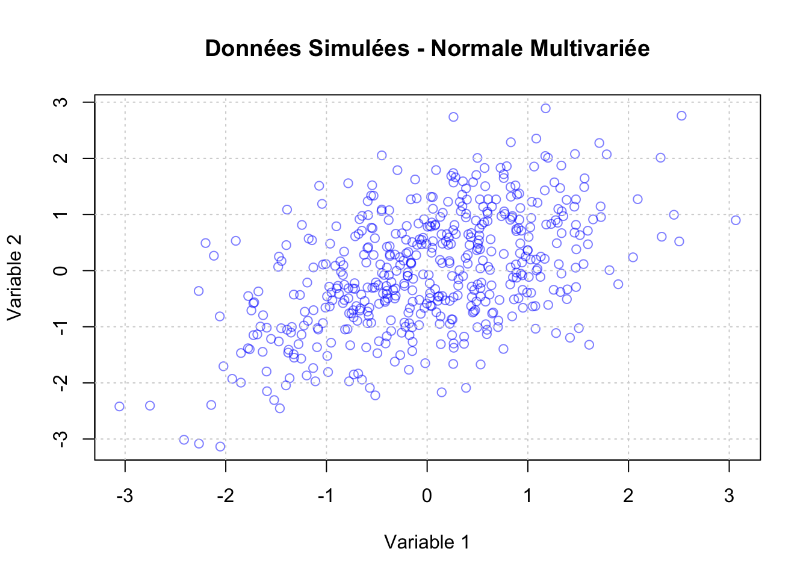

# Paramètres de la distribution normale
mu <- 0 # Moyenne
sigma <- 1 # Écart-type
# Génération d'une séquence de valeurs
x <- seq(mu - 4*sigma, mu + 4*sigma, length.out = 1000)
# Calcul de la densité théorique
densite_normale <- dnorm(x, mean = mu, sd = sigma)
# Tracé de la densité
plot(x, densite_normale, type = "l", lwd = 2, col = "blue",
main = "Fonction de Densité de la Distribution Normale",
xlab = "Valeurs", ylab = "Densité")
grid()2 Les Fonctions de Densité
Dans cette section, nous aborderons les principales fonctions de densité de probabilité utilisées en économétrie financière. Comprendre ces fonctions est essentiel pour modéliser les distributions des variables aléatoires, estimer les paramètres des modèles économétriques, et effectuer des analyses statistiques robustes. Nous utiliserons le langage R pour générer, visualiser et manipuler ces fonctions de densité.
2.1 Fonction de Densité de la Distribution Normale
La distribution normale, également connue sous le nom de distribution gaussienne, est l’une des distributions les plus couramment utilisées en statistique et en économétrie financière.
2.1.1 Génération et Tracé de la Densité Normale
Explications : - dnorm() : Calcule la densité de la distribution normale pour chaque valeur de x. - plot() : Trace la courbe de densité. - seq() : Génère une séquence de valeurs couvrant la plupart de la distribution.
2.1.2 Simulation et Superposition avec la Densité Théorique
# Génération de données simulées
set.seed(123)
data_normale <- rnorm(1000, mean = mu, sd = sigma)
# Tracé de l'histogramme avec la densité théorique
hist(data_normale, breaks = 30, probability = TRUE,
main = "Histogramme avec Densité Normale",
xlab = "Valeurs", col = "lightblue", border = "black")
curve(dnorm(x, mean = mu, sd = sigma),
col = "red", lwd = 2, add = TRUE)
legend("topright", legend = c("Données", "Densité Théorique"),
col = c("lightblue", "red"), lwd = 2, fill = c("lightblue", NA), border = c("black", NA))Interprétation : L’histogramme des données simulées suit de près la courbe de densité théorique de la distribution normale, illustrant ainsi la correspondance entre les données empiriques et la distribution théorique.
2.2 Fonction de Densité de la Distribution t de Student
La distribution t de Student est particulièrement utile lorsque la taille de l’échantillon est petite et que la variance est inconnue.
2.2.1 Génération et Tracé de la Densité t de Student
# Paramètres de la distribution t
df <- 10 # Degrés de liberté
# Génération d'une séquence de valeurs
x <- seq(-4, 4, length.out = 1000)
# Calcul de la densité théorique
densite_t <- dt(x, df = df)
# Tracé de la densité
plot(x, densite_t, type = "l", lwd = 2, col = "darkgreen",
main = "Fonction de Densité de la Distribution t de Student",
xlab = "Valeurs", ylab = "Densité")
grid()2.2.2 Comparaison entre la Distribution Normale et t de Student
# Nettoyer l'environnement
rm(list = ls())
# Définir les paramètres de la distribution t de Student
df <- 10 # Degrés de liberté
# Générer une séquence de valeurs numériques
x <- seq(-4, 4, length.out = 1000)
# Vérifier que x est numérique
if(!is.numeric(x)) {
stop("Erreur : x doit être un vecteur numérique.")
}
# Calcul de la densité théorique
densite_t <- dt(x, df = df)
# Vérifier que densite_t est numérique
if(!is.numeric(densite_t)) {
stop("Erreur : densite_t doit être un vecteur numérique.")
}
# Tracé de la densité t de Student
plot(x, densite_t, type = "l", lwd = 2, col = "darkgreen",
main = "Fonction de Densité de la Distribution t de Student",
xlab = "Valeurs", ylab = "Densité")
grid()# Comparaison avec la distribution normale
densite_normale <- dnorm(x, mean = 0, sd = 1)
# Vérifier que densite_normale est numérique
if(!is.numeric(densite_normale)) {
stop("Erreur : densite_normale doit être un vecteur numérique.")
}
# Tracé comparatif
plot(x, densite_normale, type = "l", lwd = 2, col = "blue",
main = "Comparaison des Densités Normale et t de Student",
xlab = "Valeurs", ylab = "Densité")
lines(x, densite_t, col = "darkgreen", lwd = 2, lty = 2)
legend("topright", legend = c("Normale", "t de Student"),
col = c("blue", "darkgreen"), lwd = 2, lty = c(1, 2))Interprétation : La distribution t de Student présente des queues plus épaisses que la distribution normale, ce qui reflète une plus grande probabilité d’observer des valeurs extrêmes.
2.3 Fonction de Densité de la Distribution Exponentielle
La distribution exponentielle est souvent utilisée pour modéliser le temps entre des événements indépendants.
2.3.1 Génération et Tracé de la Densité Exponentielle
# Paramètres de la distribution exponentielle
rate <- 1 # Taux
# Génération d'une séquence de valeurs
x <- seq(0, 8, length.out = 1000)
# Calcul de la densité théorique
densite_exp <- dexp(x, rate = rate)
# Tracé de la densité
plot(x, densite_exp, type = "l", lwd = 2, col = "purple",
main = "Fonction de Densité de la Distribution Exponentielle",
xlab = "Valeurs", ylab = "Densité")
grid()2.4 Fonction de Densité de la Distribution Log-Normale
La distribution log-normale est utilisée pour modéliser des variables dont les logarithmes suivent une distribution normale, couramment rencontrée dans les prix des actifs financiers.
2.4.1 Génération et Tracé de la Densité Log-Normale
# Paramètres de la distribution log-normale
meanlog <- 0 # Moyenne du log
sdlog <- 0.5 # Écart-type du log
# Génération d'une séquence de valeurs
x <- seq(0, 3, length.out = 1000)
# Calcul de la densité théorique
densite_lognormale <- dlnorm(x, meanlog = meanlog, sdlog = sdlog)
# Tracé de la densité
plot(x, densite_lognormale, type = "l", lwd = 2, col = "orange",
main = "Fonction de Densité de la Distribution Log-Normale",
xlab = "Valeurs", ylab = "Densité")
grid()2.4.2 Simulation et Superposition avec la Densité Théorique
# Génération de données simulées
set.seed(456)
data_lognormale <- rlnorm(1000, meanlog = meanlog, sdlog = sdlog)
# Tracé de l'histogramme avec la densité théorique
hist(data_lognormale, breaks = 30, probability = TRUE,
main = "Histogramme avec Densité Log-Normale",
xlab = "Valeurs", col = "peachpuff", border = "black")
curve(dlnorm(x, meanlog = meanlog, sdlog = sdlog),
col = "blue", lwd = 2, add = TRUE)
legend("topright", legend = c("Données", "Densité Théorique"),
col = c("peachpuff", "blue"), lwd = 2, fill = c("peachpuff", NA), border = c("black", NA))Interprétation : L’histogramme des données simulées suit la courbe de densité théorique de la distribution log-normale, illustrant la modélisation adéquate des données asymétriques.
2.5 Fonction de Densité de la Distribution de Poisson
Bien que la distribution de Poisson soit une distribution discrète, elle est souvent utilisée pour modéliser le nombre d’événements dans un intervalle fixe.
2.5.1 Génération et Tracé de la Densité de Poisson
# Paramètres de la distribution de Poisson
lambda <- 3 # Taux moyen d'événements
# Génération d'une séquence de valeurs entières
x <- 0:10
# Calcul de la densité théorique
densite_poisson <- dpois(x, lambda = lambda)
# Tracé de la densité
plot(x, densite_poisson, type = "h", lwd = 2, col = "darkred",
main = "Fonction de Densité de la Distribution de Poisson",
xlab = "Nombre d'Événements", ylab = "Probabilité")
points(x, densite_poisson, pch = 16, col = "darkred")
grid()2.6 Fonction de Densité de la Distribution Beta
La distribution Beta est utile pour modéliser des variables aléatoires continues limitées à l’intervalle [0, 1], souvent utilisées dans la finance pour représenter des proportions ou des probabilités.
2.6.1 Génération et Tracé de la Densité Beta
# Paramètres de la distribution Beta
alpha <- 2
beta <- 5
# Génération d'une séquence de valeurs
x <- seq(0, 1, length.out = 1000)
# Calcul de la densité théorique
densite_beta <- dbeta(x, shape1 = alpha, shape2 = beta)
# Tracé de la densité
plot(x, densite_beta, type = "l", lwd = 2, col = "brown",
main = "Fonction de Densité de la Distribution Beta",
xlab = "Valeurs", ylab = "Densité")
grid()
2.7 Visualisation de Plusieurs Fonctions de Densité sur un Même Graphique
Comparer différentes distributions permet de mieux comprendre leurs caractéristiques et leurs applications.
# Paramètres
mu <- 0
sigma <- 1
df <- 10
rate <- 1
meanlog <- 0
sdlog <- 0.5
# Génération d'une séquence de valeurs pour les distributions continues
x_cont <- seq(-4, 4, length.out = 1000)
x_lognorm <- seq(0, 3, length.out = 1000)
x_beta <- seq(0, 1, length.out = 1000)
# Calcul des densités
densite_normale <- dnorm(x_cont, mean = mu, sd = sigma)
densite_t <- dt(x_cont, df = df)
densite_exp <- dexp(x_cont, rate = rate)
densite_lognormale <- dlnorm(x_lognorm, meanlog = meanlog, sdlog = sdlog)
densite_beta <- dbeta(x_beta, shape1 = alpha, shape2 = beta)
# Tracé des densités normales et t de Student
plot(x_cont, densite_normale, type = "l", lwd = 2, col = "blue",
main = "Comparaison des Fonctions de Densité",
xlab = "Valeurs", ylab = "Densité")
lines(x_cont, densite_t, col = "darkgreen", lwd = 2, lty = 2)
legend("topright", legend = c("Normale", "t de Student"),
col = c("blue", "darkgreen"), lwd = 2, lty = c(1, 2))# Tracé des densités exponentielle et log-normale
plot(x_cont, densite_exp, type = "l", lwd = 2, col = "purple",
main = "Comparaison des Fonctions de Densité",
xlab = "Valeurs", ylab = "Densité")
lines(x_lognorm, densite_lognormale, col = "orange", lwd = 2, lty = 2)
legend("topright", legend = c("Exponentielle", "Log-Normale"),
col = c("purple", "orange"), lwd = 2, lty = c(1, 2))
# Tracé de la densité Beta
plot(x_beta, densite_beta, type = "l", lwd = 2, col = "brown",
main = "Fonction de Densité de la Distribution Beta",
xlab = "Valeurs", ylab = "Densité")
grid()Interprétation : Les graphiques comparatifs montrent les différences entre les distributions normales, t de Student, exponentielles, log-normales et Beta, mettant en évidence leurs formes, leurs asymétries et leurs applications potentielles en économétrie financière.
2.8 Fonction de Densité Multivariée
En économétrie financière, il est souvent nécessaire de travailler avec des distributions multivariées, telles que la distribution normale multivariée, pour modéliser les relations entre plusieurs variables financières.
2.8.1 Génération et Tracé de la Densité Normale Multivariée
# Installation et chargement du package nécessaire
if(!require(MASS)) {
install.packages("MASS")
library(MASS)
}
# Paramètres de la distribution normale multivariée
mu <- c(0, 0) # Moyennes
Sigma <- matrix(c(1, 0.5, 0.5, 1), nrow = 2) # Matrice de covariance
# Génération de données simulées
set.seed(789)
data_mvnorm <- mvrnorm(n = 500, mu = mu, Sigma = Sigma)
# Tracé des données
plot(data_mvnorm, main = "Données Simulées - Normale Multivariée",
xlab = "Variable 1", ylab = "Variable 2", col = rgb(0, 0, 1, 0.5))
grid()
Interprétation : Les données simulées suivent une distribution normale multivariée avec une corrélation de 0.5 entre les deux variables, ce qui est visible dans la forme ellipsoïdale des données.
2.9 Conclusion
Cette section a couvert les principales fonctions de densité de probabilité utilisées en économétrie financière. En maîtrisant ces fonctions et leur manipulation en R, vous serez mieux équipé pour modéliser, analyser et interpréter les données financières. Les exemples pratiques présentés ici illustrent comment générer, visualiser et comparer différentes distributions, ce qui est essentiel pour développer des modèles économétriques robustes et pertinents.
N’hésitez pas à explorer davantage ces fonctions en modifiant les paramètres et en expérimentant avec d’autres distributions pour approfondir votre compréhension.